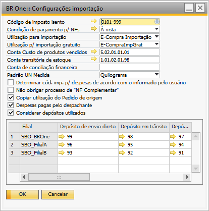

Configurações de importação
As primeiras configurações a serem feitas dentro do SAP referem-se aos campos que devem ser preenchidos na tela de Configurações de Importação, na qual permite configurar todos os recursos necessários para realizar importações de forma eficiente, garantindo o cumprimento de todas as normas e regulamentações aplicáveis.
Para acessar a tela Configurações de Importação, é necessario ir ao menu:
Administração -> Definição -> Importação -> Configurações de Importação
Nesta tela estão todos os campos que devem ser preenchidos para retornar algo ao usuário que esteja realizando o processo de importação no sistema, cada campo deve ser configurado de acordo com as especificações da contabilidade da empresa.
Campo - Código de Imposto Isento
O campo de Código de Imposto Isento deverá ser selecionado o código de imposto a ser usado no NF de Transporte.
Neste campo, só poderão ser selecionados códigos de impostos onde todos os tipos de impostos no código de impostos tenham alíquotas igual a 0 (zero) e que estejam ativos (com o flag Inativo desmarcado).
Campo – Condição de Pagamento para NFs
A condição de pagamento selecionada será utilizada para gerar a NF de nacionalização, NF de Transporte e NF Complementar (Recebimento de mercadoria).
Apenas poderá ser selecionada uma condição que não terá dias na parcela, ou seja, não terá prestações.
Essa condição de pagamento serve apenas para referência no momento de gerar os documentos de marketing*, pois as contas a pagar já foram tratadas em outros momentos, o* motivo deste campo é para os processos não serem interrompidos no momento de gerar os documentos de Notas Fiscais necessárias, visto que este campo é obrigatório nos documentos do SAP.
Campo – Utilização para importação
A utilização selecionada será aplicada como padrão na NF de Nacionalização (Nota Fiscal de Entrada), a menos que seja indicado nas flags abaixo para utilizar a informação proveniente do pedido de compra de origem.
Campo – Utilização para importação gratuito
Essa utilização será usada para os processos dos itens bonificados, também será usada nos documentos de NF de Entrada (Nacionalização), NF de Transporte e NF Complementar (Recebimento de mercadoria).
Campo – Conta Custo de produtos vendidos
Na seleção das Conta Custo de produtos vendidos apenas poderá ser escolhida uma conta ativa, não sendo possível selecionar uma conta título. A conta será utilizada para realizar o LCM quando não existir as quantidades no depósito depois que a NF de nacionalização for executada após o processo de recebimento (Transferência).
Campo – Conta transitória de Estoque
Deverá ser selecionada uma conta contábil temporária que será utilizada para lançar o valor do estoque dos itens no LCM de ajuste da NF de Nacionalização e no processo de Reavaliação de estoque das despesas de importação.
Conta de conciliação financeira
O campo Conta de conciliação financeira refere-se a uma conta temporária de alocação que será utilizada nos LCMs (Lançamentos Contábeis Manuais) de Adiantamento ao PN (Parceiro de Negócio) e Invoice, no qual os valores serão alocados até que o processo de conciliação de importação seja concluído. Essa conta será utilizada nos lançamentos de adiantamento, na Invoice, e no momento de nacionalização e reavaliação de itens gratuitos.
Conta e Ordem de importação
O campo Conta e ordem de importação refere-se a uma conta temporária de alocação que será utilizada no LCM (Lançamento Contábil Manual) de despesas adicionais e impostos que acontece no momento na nacionalização (indireta) dos produtos, e no LCM de despesas de importação (despesas que ocorrem após a nacionalização), no qual os valores serão alocados até que o processo de fechamento de importação seja concluído. No final do processo de importação, será feita apuração do saldo da “conta e ordem de importação”, e feito um LCM, creditando o saldo da conta e debitando na conta contábil de compra gratuita, do LCM da NF vinculada.
Campo – Padrão Unidade de Medida Flags
A unidade de medida selecionada nesse campo será usada para efetuar a conversão do peso no carregamento das linhas no pedido de compra no processo de importação.
Flag – Determinar Cód. Imp. p/ despesas de acordo com o informado pelo usuário
Esse parâmetro indica se o código de imposto para despesas será atribuído automaticamente utilizando a regra já existente de checar base de cálculo e alíquota ou se irá ser apontado manualmente no campo de Cód. Imposto desp. na tela de Códigos de imposto – Configuração do imposto definido para o momento de nacionalização.
Para o correto funcionamento do parâmetro, o campo Cód. imposto desp. deverá estar preenchido na tela Códigos de imposto – Configuração com o imposto que será incidido sob as linhas de despesa do item.

Os impostos que poderão ser selecionados serão aqueles em que:
Possuírem a flag Despesas Adicionais marcados;
Tiverem o CFOP de Entrada e Saída iguais ao do código de imposto que estiver sendo configurado.
Por exemplo, foi configurado um código de imposto 3101-001 com CFOP de Entrada 3101 e Saída 7201 e para o imposto de despesas foi definido que será o código 3101-Dp1, perceba que a flag de Despesas adicionais está marcada e os CFOP são os mesmos configurados no código 3101-001 (Entrada 3101 e Saída 7201).


Assim, ao inserir uma NF Nacionalização, ao preencher o campo de Despesas adicionais 1, o campo de Despesas adicionais 1 código de imposto será preenchido com o código de imposto definido previamente para as despesas e será calculado os impostos sobre a linha de despesas, que serão mostrados no campo de Despesas adicionais na nota fiscal.

Caso este parâmetro seja selecionado (Determinar Cód. Imp. p/ despesas de acordo com o informado pelo usuário) na tela de Configurações de Importação, o código de imposto comece com 3 e a flag Despesas adicionais esteja marcada, é obrigatório preencher o campo de Cód. de imposto de desp..
Caso contrário, a seguinte mensagem será exibida: BR One :: Para códigos que comecem com 3, é obrigatório preencher o código de imposto de despesas.
Caso este parâmetro não seja selecionado (Determinar Cód. Imp. p/ despesas de acordo com o informado pelo usuário), o campo *Cód. imposto desp. ficará bloqueado e a regra para preenchimento automático do código de imposto das despesas na NF de Nacionalização continua atribuindo o código de imposto das despesas automaticamente de acordo com alíquota e base de cálculo do ICMS do item da linha.
Flag – Não obrigar processo de NF Complementar
Esse parâmetro permite definir se o processo de geração de Nota Fiscal Complementar será obrigatório ou não. Por padrão o parâmetro não é selecionado, o que significa que será necessário gerar uma Nota Fiscal Complementar antes de concluir o fechamento de numerário. Caso contrário, se o parâmetro estiver selecionado, o fechamento de numerário poderá ser realizado mesmo sem a geração da Nota Fiscal Complementar.
Flag – Copiar utilização do Pedido de origem
Quando a flag estiver marcada, a utilização da linha do pedido de compra será a mesma para a coluna Utilização na aba Itens ao realizar o processo de importar pedido de compra. Essa informação será utilizada também na geração da NF de Nacionalização. É importante ressaltar que, caso a utilização esteja vazia, no momento de importar o pedido de compra, também não aparecerá nenhum valor e será necessário o preenchimento manual para prosseguir com a geração da NF de Nacionalização.
No vídeo a seguir, é apresentado o processo de importação, no qual as utilizações mostradas na aba de Itens vieram das utilizações dos pedidos de compra.
Vale destacar que, durante a demonstração, uma das utilizações estava vazia, o que resultou na exibição do campo vazio na coluna Utilização na aba Itens.

Se ao tentar gerar a NF de Nacionalização e houver algum campo sem utilização, a seguinte mensagem será exibida: BR One :: A linha não possui utilização preenchida, impossível continuar o processo. Portanto, é obrigatório preencher a utilização antes de gerar a Nota Fiscal de Nacionalização.
Por outro lado, caso a flag esteja desmarcada, a utilização que será considerada para o preenchimento da coluna Utilização na aba Itens e na geração da NF Nacionalização será a utilização configurada na tela de Configuração de Importação no campo Utilização para importação.
Flag – Considerar depósitos utilizados
Quando essa flag estiver marcada, essa informação será apresentada na tela Despesas Importação, no campo Considerar depósitos utilizados.
Este padrão é seguido toda vez que a tela estiver com o botão no modo Adicionar.

Essa configuração irá recuperar os depósitos utilizados na transferência de estoque (ao fazer o recebimento da mercadoria) para ser utilizado na reavaliação de estoque no processo de despesas de importação. Além desta flag marcada, para o processo ocorrer, o depósito também precisa estar configurado corretamente, portanto na tela de Depósitos – Definição é necessário estar com o parâmetro de relevante para o processo de despesas de importação marcado.

Exemplo:
Se a flag Considerar depósitos utilizados estiver marcada e na transferência for informado o depósito 02 (contendo a flag Relevante para despesas de importação checada), ao efetuar a despesa de importação, a reavaliação de estoque será para o depósito 02.
Caso o depósito 02 não possuir a opção Relevante para despesas de importação selecionada, a reavaliação de estoque será para os depósitos encontrados com a flag Relevante para despesas de importação checada.
Se a flag Considerar depósitos utilizados não estiver marcada e na transferência for informado o depósito 02, a reavaliação de estoque será para o primeiro depósito encontrado com a flag Relevante para despesas de importação checada.
A unidade de medida selecionada nesse campo será usada para efetuar a conversão do peso no carregamento das linhas no pedido de compra no processo de importação.
Tabela de configurações de filiais
Coluna – Filial
Na coluna Filial aparecerá o nome da empresa, e caso seja Multi-filial, aparecerão todas as filiais existentes.
Coluna – Depósito de envio direto
O depósito será utilizado na NF de Transporte (Recebimento de mercadoria) e NF Complementar (Recebimento de mercadoria). Apenas poderão ser selecionados depósitos que tenham o flag Expedição direta marcado.

Coluna – Depósito em trânsito
O depósito em trânsito será utilizado na NF de Nacionalização (NF de Entrada). Poderá ser selecionado qualquer depósito do cadastro de depósitos, exceto depósitos com o flag *Expedição direta* marcado e que não possuam saídas. Para multi-filial, só poderão ser selecionados depósitos pertinentes a filial da linha.
Caso o usuário tente criar algum documento com o depósito configurado como ‘Depósito em trânsito’ e/ou o usuário tente realizar alguma movimentação (entrada ou saída) neste depósito, e não seja um documento com vínculo ao processo de importação (NF Nacionalização [NF-Entrada] ou Recebimento [Transferência de estoque]), a seguinte mensagem de erro será exibida:
BR One :: Não é possível realizar movimentações que envolvam os depósitos em trânsito (‘X’ e ‘X’).
Coluna – Depósito em trânsito gratuito
O depósito em trânsito gratuito será utilizado na NF de Nacionalização (NF de Entrada) para os itens do documento que forem gratuitos. As mesmas regras para o depósito em trânsito estão aplicadas para seleção do depósito em trânsito gratuito.
O depósito em trânsito gratuito não poderá ser o mesmo depósito da coluna depósito em trânsito. Caso o usuário tente selecionar o mesmo depósito para as duas colunas, a seguinte mensagem será exibida:
BR One :: Erro na linha 1. Não é possível selecionar o mesmo depósito como Depósito em trânsito e Depósito em trânsito gratuito.
Caso a versão do SAP Business One utilizada seja a 9.0, o campo considerado será o *Só imposto.*
Caso o usuário tente criar algum documento com o depósito configurado como ‘Depósito em trânsito gratuito’ e/ou o usuário tente realizar alguma movimentação (entrada ou saída) neste depósito, e não seja um documento com vínculo ao processo de importação (NF Nacionalização [NF-Entrada] ou Recebimento [Transferência de estoque]), a seguinte mensagem de erro será exibida:
BR One :: Não é possível realizar movimentações que envolvam os depósitos em trânsito (‘X’ e ‘X’).
Coluna – Sequência de numeração
Sequência que será utilizada na NF de Nacionalização (NF de Entrada), NF de Transporte e NF Complementar (Recebimento de mercadoria). Há algumas condições para a sequência ser selecionada:
Para a sequência* poder ser selecionada, é necessário que ela esteja igual tanto na sequência Notas fiscais de entrada e Recebimento de mercadorias.

Os seguintes parâmetros têm que estar configurados:
O flag Atribuir tem que estar marcado;
A filial tem que ser a mesma da linha, no caso do exemplo, a filial Matriz;
O Modelo tem que estar com o flag Sequência Importação marcado;


Quando houver uma filial informada para a sequência, a sequência será exibida apenas na linha da filial. Quando não houver filial, a sequência será exibida para todas as filiais.
Além das sequências parametrizadas, também é possível escolher a opção Manual, nas Sequência de numeração na tela Configurações de Importação. Sendo possível que o usuário preencha a sequência de forma manual na N.F. de entrada (Nacionalização).

Coluna – Sequência para Transferência de Estoque
A sequência p/ transferência de estoque será utilizada ao gerar o recebimento de mercadoria no processo de importação. Independentemente de ser Multi-filial ou não a sequência deve ser preenchida na tela de configurações de importação.

A sequência p/ transferência de estoque será listada contendo os ID’s das sequências, nomes das sequências e a filiais correspondentes, conforme a filial da linha selecionada na linha das configurações de importação, mostrando apenas as numerações ativas, caso não seja Multi-filial, a opção padrão será mostrada.

Caso o usuário queira adicionar outra numeração de recebimento de mercadoria, ele pode ir até Administração > Inicialização do sistema > Numeração de documentos.

Caso algum campo de sequência de numeração esteja vazio, ao atualizar, a seguinte mensagem será exibida:

BR One :: Erro na linha x. Todas as sequências devem estar preenchidas.
Todas as sequências que serão utilizadas no processo de importação não podem estar bloqueadas. Caso uma sequência que já esteja sendo utilizada seja bloqueada ou desatribuída (na tela Sequência para a nota fiscal), a seguinte mensagem respectiva será exibida:

BR One :: Erro na linha x. Sequência em uso, não pode ser bloqueada.

BR One :: Erro na linha x. Sequência em uso, não pode ser desatribuída.